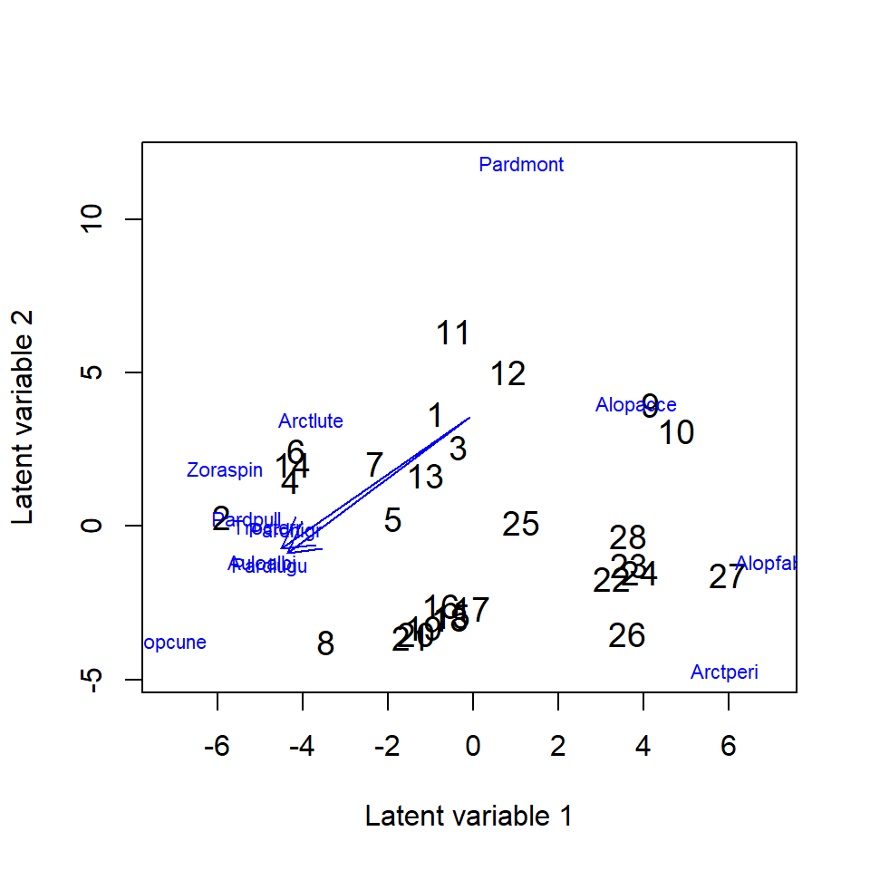

vignettes/vignette5.Rmd
vignette5.RmdIn this example we demonstrate how to implement the quadratic response model in . Quadratic curves are frequently occurring in community ecology, specifically to describe the response of species to the environment. When one has measured predictor variables, a quadratic function can straightforwardly be included in a regression in R using the \(poly(\cdot,2)\) function. However, in a GLLVM, latent variables are included that can represent unmeasured predictors. As such, we might want to test if species respond to those unknown predictors too. This is similar to the theory behind other ordination methods, such as Correspondence Analysis and its constrained variant (CCA).
We will use the hunting spider dataset as an example, which includes 12 species at 100 sites. It also includes measurements of the environment at 28 sites, though we will not use those here.
The unique thing about the quadratic response model, is that specifying a quadratic term for each species separately, coincides with the assumption that species have their own ecological tolerances. A more simple more, would be to assume that species have the same tolerance, in essence that all species are a generalist or specialist to the same degree. This can be done using a linear response model, with random row-effects:
ftEqTol <- gllvm(Y, family = "poisson", row.eff = "random", num.lv = 2)Next, we can fit a model where we assume species tolerances are the
same for all species, but unique per latent variable, which we will
refer to as species common tolerances. We do this using the
quadratic flag in the \(\text{gllvm}(.)\) function, which has the
options FALSE, LV (common tolerances), and
TRUE (unique tolerances for all species).
ftComTol <- gllvm(Y, family = "poisson", num.lv = 2, quadratic = "LV")And lastly, we can fit the full quadratic model.
ftUneqTol <- gllvm(Y, family = "poisson", num.lv = 2, quadratic = TRUE)GLLVMs are sensitive to the starting values, and with a quadratic
response model even more so. As such, the unequal tolerances model by
defaults fits a common tolerances model first, to use as starting
values. This option is control through the start.struc
argument in start.control.
Now, we can use information criteria to determine which of the models fits the hunting spider data best.
AICc(ftEqTol,ftComTol,ftUneqTol)## [1] 1671.791 1662.872 1455.211The unequal tolerances model fits best, as measured by AICc. Species optima and tolerances, and their approximate standard errors, can be extracted:
#Species optima for LVs
optima(ftUneqTol)## $optima
## LV1 LV2
## Alopacce 3.965490e+00 0.0000000
## Alopcune -5.553114e+00 2.1737870
## Alopfabr 2.882229e+00 -5.0004136
## Arctlute -1.064758e-01 4.3714550
## Arctperi 4.941439e-01 -6.4059967
## Auloalbi -2.338145e+01 3.1944201
## Pardlugu -1.510996e+10 0.1721661
## Pardmont 6.694648e+00 6.3037105
## Pardnigr -2.275915e+00 2.6144288
## Pardpull -2.559914e+00 3.3701747
## Trocterr -2.421346e+00 2.9504054
## Zoraspin -1.973960e+00 4.6332028
##
## $sd
## LV1 LV2
## Alopacce 2.195068e+00 0.0000000
## Alopcune 1.202697e+01 0.3569737
## Alopfabr 1.842421e+00 1.6823515
## Arctlute 1.037179e+00 0.6706263
## Arctperi 1.640542e+00 9.4711666
## Auloalbi 5.040738e+01 0.3823388
## Pardlugu 2.257074e+19 0.5965602
## Pardmont 3.404082e+00 0.7455549
## Pardnigr 8.929421e-01 0.3604559
## Pardpull 1.380352e+00 0.4503055
## Trocterr 3.305201e+00 0.4162171
## Zoraspin 6.366920e-01 0.7915519
#Species tolerances
tolerances(ftUneqTol)## $tolerances
## LV1 LV2
## Alopacce 1.991354e+00 75766.331108
## Alopcune 8.945236e+00 1.474377
## Alopfabr 1.953173e+00 3.781882
## Arctlute 1.202133e+00 1.563114
## Arctperi 2.258854e+00 1.534928
## Auloalbi 8.548964e+00 1.421615
## Pardlugu 1.795206e+05 2.500156
## Pardmont 4.077629e+00 4.277142
## Pardnigr 2.416366e+00 1.407778
## Pardpull 3.464405e+00 1.353039
## Trocterr 3.927594e+00 2.601884
## Zoraspin 2.419449e+00 3.130584
##
## $sd
## LV1 LV2
## Alopacce 5.511496e-01 2.022875e+12
## Alopcune 8.441931e+00 1.210592e-01
## Alopfabr 6.742254e-01 8.571050e-01
## Arctlute 4.400838e-01 6.274575e-01
## Arctperi 1.302227e+00 6.200647e-01
## Auloalbi 9.199530e+00 1.190251e-01
## Pardlugu 1.340808e+14 5.221469e-01
## Pardmont 1.478596e+00 4.625374e-01
## Pardnigr 8.168787e-01 1.428389e-01
## Pardpull 1.202451e+00 1.100905e-01
## Trocterr 1.311188e+00 2.558470e-01
## Zoraspin 8.340288e-01 4.255038e-01The standard deviation of the latent variables can be printed using the \(\text{summary}(.)\) function. Since latent variable models are scale invariant, this scale parameter is relative to the identifiability constraint (diagonal of the species scores matrix). It can be understood as a measure of gradient length, though for a measure that might be more comparable to DCA (i.e. on average unit variance species curves), see the reference below.
The residual variation explained can be used to calculate residual correlations, or to partition variation, similar as in the vanilla GLLVM:
#Residual variance per latent variable
#for the linear term
getResidualCov(ftUneqTol)$var.q## LV1 LV2
## 39.26665 258.82103
#for the quadratic term
getResidualCov(ftUneqTol)$var.q2## LV1^2 LV2^2
## 95.95021 120.62052Finally, we can use the \(\text{ordiplot}(.)\) function to visualize the species optima. However, since species optima can be quite large if they are unobserved, or if too little information is present in the data, creating a nice figure can be challenging. One attempt to improve readability of the species optima in a figure is to point an arrow in their general direction, if species optima are “unobserved”: outside of the range of the predicted site scores.
ordiplot(ftUneqTol, biplot=TRUE, spp.arrows = TRUE)
The standard deviation of the latent variables, presented in the summary information of the model, can serve as a measure of gradient length. This measure is different to that presented in van der Veen et al. (2021), and not directly comparable to e.g. the output of axis length by Detrended Correspondence Analysis (DCA).